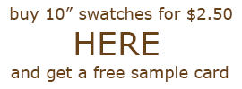
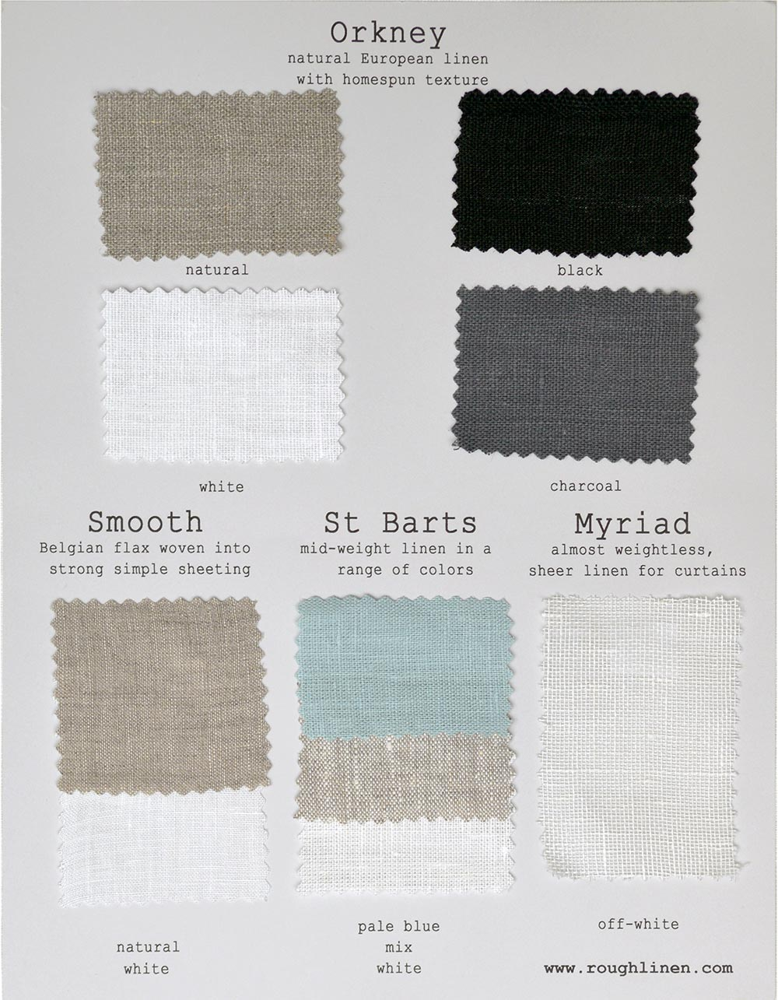

    <div id="main">
        <h1>sample card</h1>
        <div class="col-md-4 center-block">
            <a href="http://eepurl.com/bPK1v">
                
            </a>
        </div>
        <div class="col-md-4 center">
            <a href="rough-linen-sample-card.html"><h2>or</h2></a>
        </div>
        <div class="col-md-4">
            <a href="https://store.roughlinen.com/fabric-sample-card-p58.aspx">
                
            </a>
        </div>
        <p> The only way to gauge the true color and feel of my linen is from a (free) sample card.</p>
        <br>
        
    </div>

